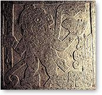

Carving depicting monkey, from the Chavín temple |
Animals and plants typical of the eastern lowlands have long been noted in Chavín art, and it has been argued that this implies an eastern origin for the beliefs underlying the culture. What can be said with clarity is that the location of Chavín de Huántar would not have been natural home to the caiman (alligator), monkey, manioc plant, or many other representations in the art.
|